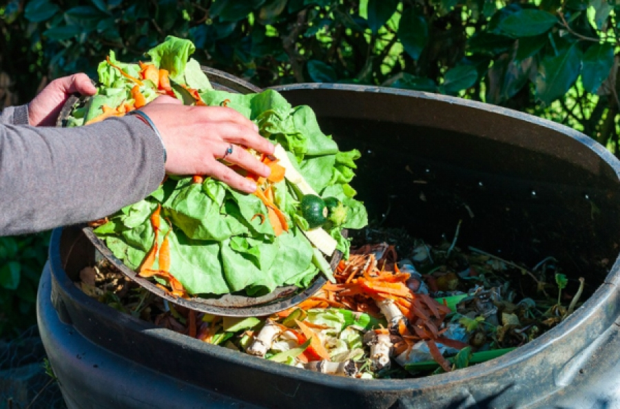
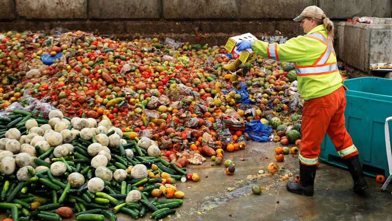
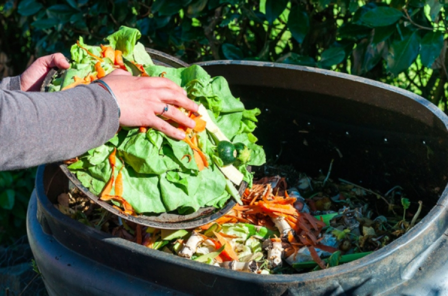
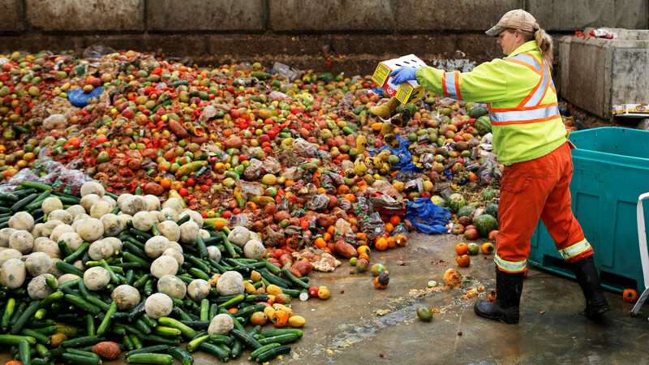
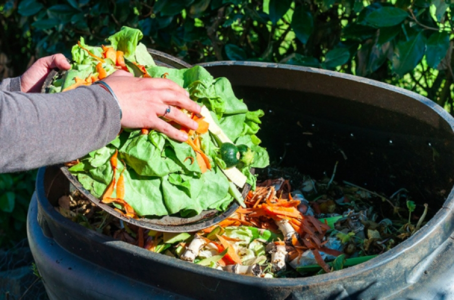
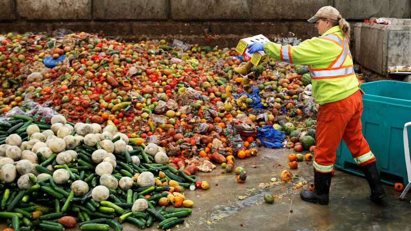

A ONU mostra que o Brasil desperdiça a cerca de 27 milhões de toneladas de alimentos por ano.
O desperdício de alimentos acontece muito nas colheitas, transporte, comércios, casas e etc.
Toneladas de alimentos são jogados no lixo em função de sua alta perecibilidade, condições inadequadas de embalagem, manuseio e armazenamento.
É muito grave e temos que nos comprometer bastante nesses assuntos, mas vejo muitas pessoas brincando ou jogando fora os alimentos. Para isso temos que conscientizar as pessoas sobre esses problemas para tentar controlar a falta de alimentos do mundo.
Nas escolas públicas do município de Umuarama vemos muito desperdício de comida, inclusive tem um lugar onde você coloca o resto de merenda e sempre está cheio. Isso incentiva os alunos a jogarem fora e não poderia existir esse espaço.
Um plano de intervenção é implantar um sistema de buffet onde os alunos se servem na quantiade adequada evitando assim o desperdício, paralelo a isso realizar também uma campanha de conscientização com cartazes e palestras com profissionais.

Além da fome e da subnutrição devido à escassez de alimentos, há uma série de outras questões que também são relevantes.
Por exemplo, pode ser derivado de problemas ambientais como a falta de aterros, o aumento dos custos de eliminação de resíduos e das emissões de CO2 provenientes da incineração e da eliminação de aterros.
Por esse motivo, evitar o desperdício de alimentos é fundamental para criar hábitos mais sustentáveis, não só para cuidar do planeta, como também para criar uma conscientização a respeito dos problemas relacionados à fome.
Nos dados de UNEP Food Waste Index Report 2021(índice de desperdício de alimentos), os países que mais tem desperdícios são:
O Brasil no momento está em 7º lugar, mas ainda precisamos melhorar muito, pois com essas pequenas mudanças, podemos melhorar de pouco a pouco o nosso futuro para as próximas gerações.